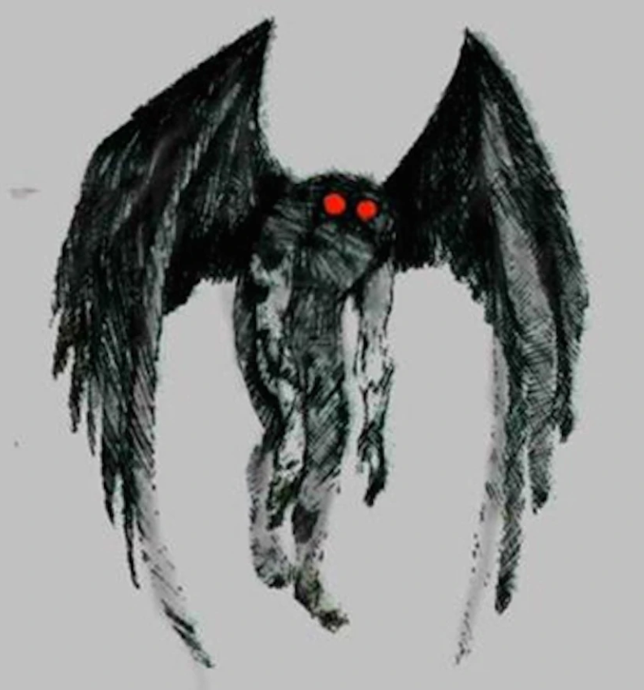

{% extends '_layout.html' %}
{% block title %}Cryptid Catalog | Encyclopedia{% endblock %}
{% block body %}
- BACK
- MOTHMAN
- Type: Winged

- In West Virginia folklore, the Mothman is a humanoid creature reportedly seen in the Point Pleasant area from November 15, 1966, to December 15, 1967. The first newspaper report was published in the Point Pleasant Register, dated November 16, 1966, titled "Couples See Man-Sized Bird ... Creature ... Something". The national press soon picked up the reports and helped spread the story across the United States.
An annual festival in Point Pleasant is devoted to the Mothman legend.
On November 15, 1966, two young couples from Point Pleasant—Roger and Linda Scarberry, and Steve and Mary Mallette—told police they saw a large grey creature whose eyes "glowed red" when the car's headlights picked it up. They described it as a "large flying man with ten-foot wings", following their car while they were driving in an area outside of town known as "the TNT area", the site of a former World War II munitions plant.
During the next few days, other people reported similar sightings. Two volunteer firemen who saw it said it was a "large bird with red eyes". Mason County Sheriff George Johnson commented that he believed the sightings were due to an unusually large heron he termed a "shitepoke". Contractor Newell Partridge told Johnson that when he aimed a flashlight at a creature in a nearby field, its eyes glowed "like bicycle reflectors". Additionally, he blamed buzzing noises from his television set and the disappearance of his German Shepherd dog on the creature.
{% endblock %}